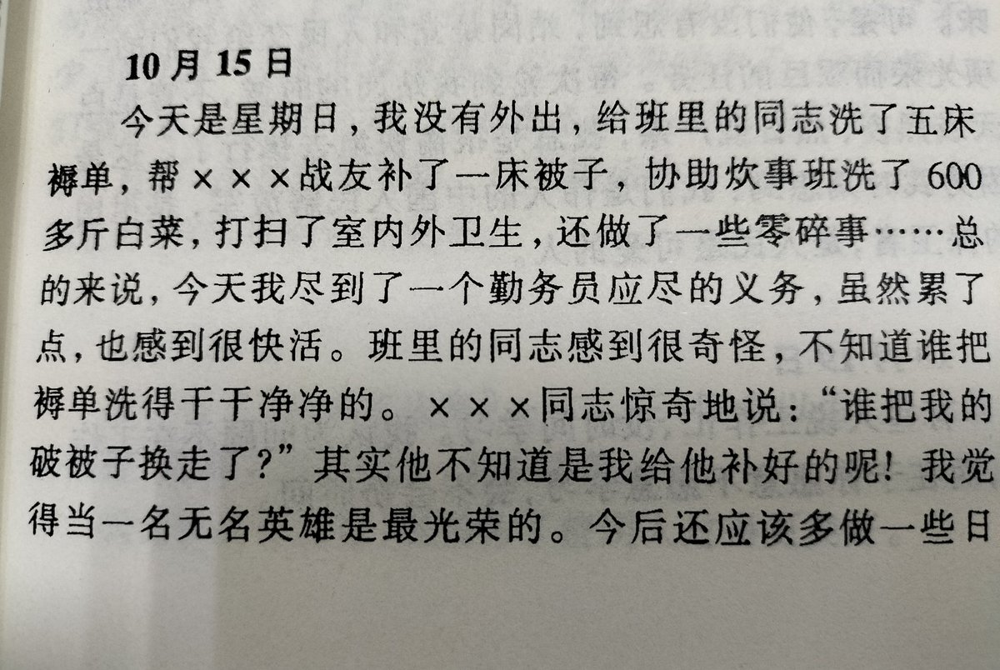

恋恋喜欢心跳大冒险🍥
@ansiyao520
最近我阅读了大量雷锋同志的事迹。一方面，我被他毫不利己、一心奉献革命的精神所折服。另一方面，雷锋在日记里总是强调自己是被共产党拯救的，要为党的事业奉献一生——他对革命事业更多的是一种感恩之情——这也引起了我深深的思考。
他做好事，更多的是出于自己极大的开心和满足感。因此，他总是对任何好事都产生极大的兴趣，投入其中，还经常只有自己一个人在做好事。我认为这都值得深思。
道德毒品这个东西……
雷锋是一个时代塑造出来的人物。我们不仅要学习他，还要反思他。
